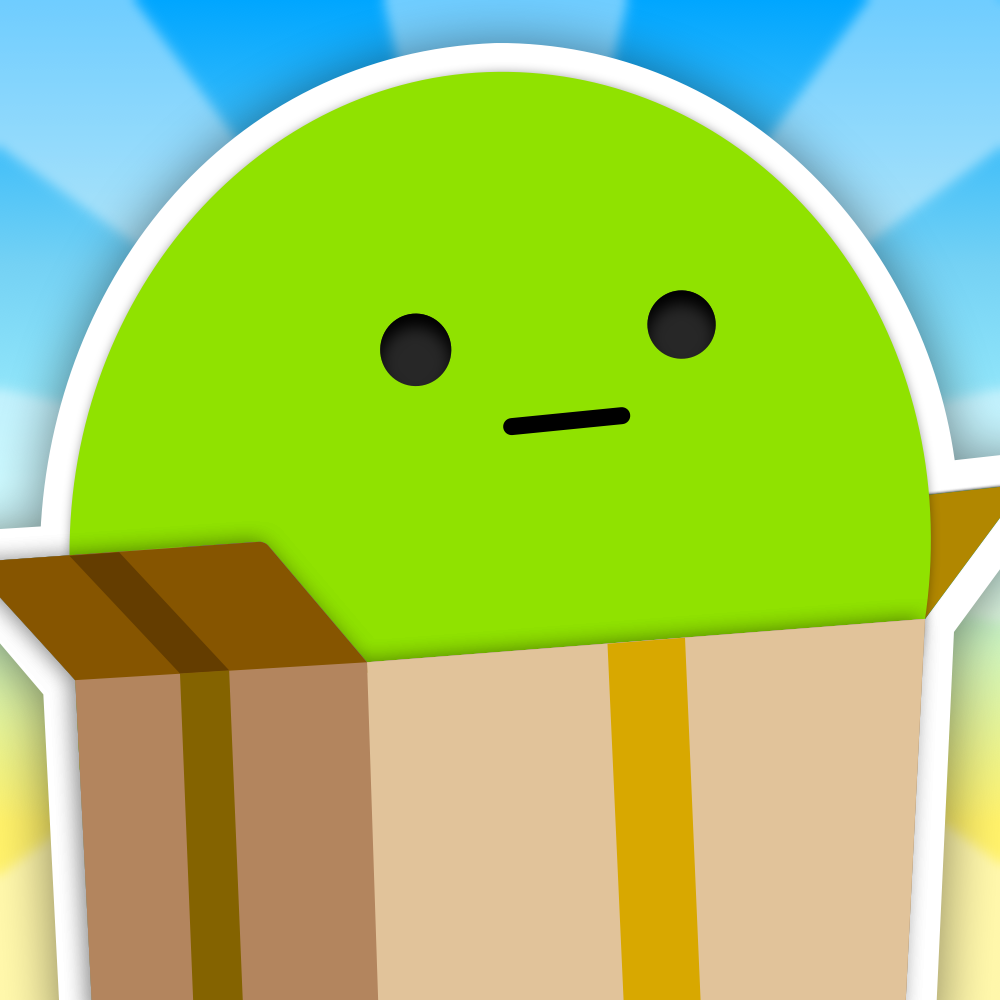
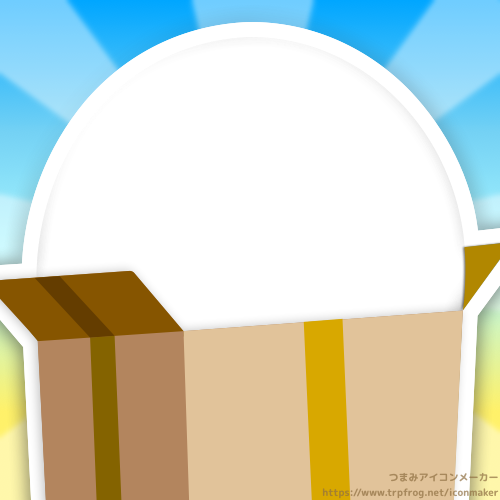

アイコンメーカー
画像をアップロードしてつまみアイコンを作ろう！
作成したアイコンはSNS等のアイコンに使うことができます。
画像の選択
アイコンにしたい画像を選択してください。
プレビュー
位置を調整していい感じのところで描画を押してください。
生成した画像
 
ご利用条件・免責事項
当サービスは第三者の権利を侵害したり、 公序良俗や法律に反するような用途にはご利用いただけません。 また、当サービスを使用したことにより発生したいかなる損害に対しても、 当サイトは一切の責任を負いません。